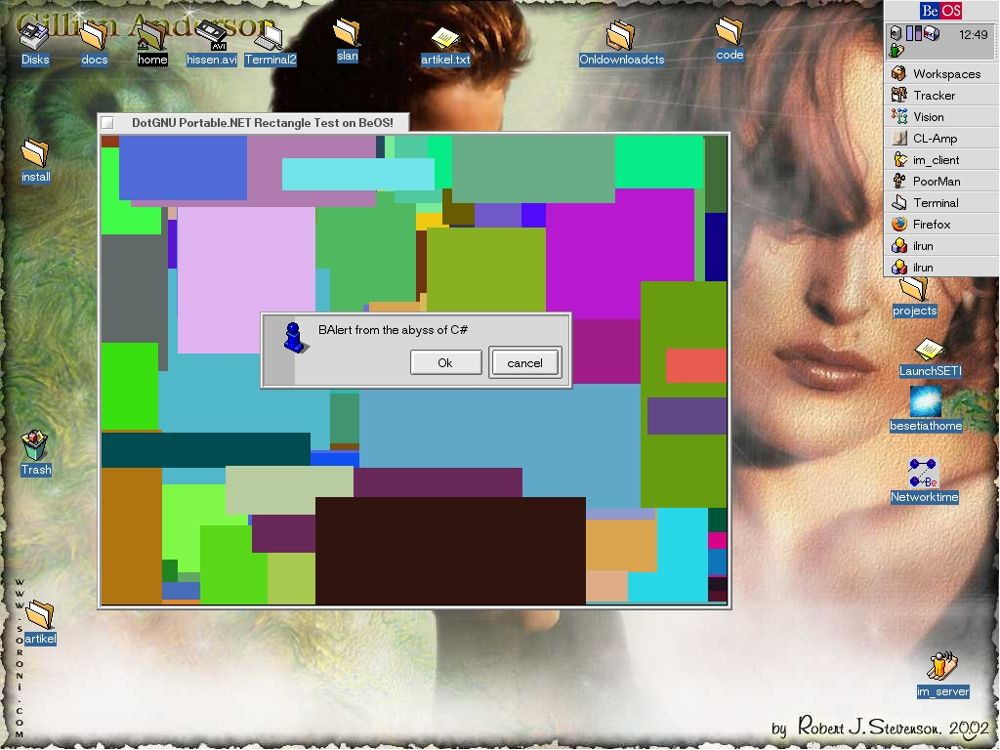

See below for full source code of this demo.
Source code follows.
BAlert.cs; this file is in the public domain:
using System.Runtime.InteropServices;
using System.UnmanagedTypes;
public unsafe class BAlert
{
BAlert *handle;
[DllImport("be_BAlert.so")]
private extern static System.IntPtr be_BApplication_Ctor(string name);
[DllImport("be_BAlert.so")]
private extern static BAlert * be_BAlert_Ctor_1(string title, string text, string button1, string button2);
public BAlert(string title, string text, string button1, string button2) {
be_BApplication_Ctor("application/x-vnd.slan");
handle = be_BAlert_Ctor_1(title, text, button1, button2);
}
[DllImport("be_BAlert.so")]
private extern static void be_BAlert_Dtor(BAlert *handle);
~BAlert() {
be_BAlert_Dtor(handle);
}
[DllImport("be_BAlert.so")]
private extern static int be_BAlert_Go(BAlert *handle);
public int Go() {
return be_BAlert_Go(handle);
}
}
public class Test
{
public unsafe static void Main() {
BAlert allert = new BAlert("Test", "BAlert from the abyss of C#", "Ok", "cancel");
allert.Go();
}
}
be_BAlert.cpp; this file is in the public domain:
#include "be_BAlert.h"
#include <stdio.h>
BApplication * be_BApplication_Ctor(const char *name)
{
return new BApplication(name);
}
BAlert * be_BAlert_Ctor_1(const char *title,
const char *text,
const char *button1,
const char *button2)
{
printf("be_BAlert_Ctor_1()\n");
printf("title: %s\ntext: %s\nbutton1: %s\nbutton2: %s\n", title, text, button1, button2);
return new BAlert(title, text, button1, button2);
}
void be_BAlert_Dtor(BAlert *handle)
{
printf("be_BAlert_Dtor()\n");
delete handle;
}
int be_BAlert_Go(BAlert *handle)
{
printf("be_BAlert_Go()\n");
handle->Go();
}
be_BAlert.h; this file is in the public domain:
#include <Application.h>
#include <Alert.h>
extern "C" {
BApplication * be_BApplication_Ctor(const char *name);
BAlert * be_BAlert_Ctor_1(const char * title,
const char *text,
const char *button1,
const char *button2);
void be_BAlert_Dtor(BAlert *handle);
int be_BAlert_Go(BAlert *handle);
}
Rectangles.cs; this file is derived from a
copyrighted file containing MIT-licensed and LGPL-licensed code.
/*
MIT License
Copyrightà ©2003-2004 Randy Ridge
http://www.taoframework.com
All rights reserved.
Permission is hereby granted, free of charge, to any person obtaining a copy
of this software and associated documentation files (the "Software"), to deal
in the Software without restriction, including without limitation the rights
to use, copy, modify, merge, publish, distribute, sublicense, and/or sell
copies of the Software, and to permit persons to whom the Software is
furnished to do so, subject to the following conditions:
The above copyright notice and this permission notice shall be included in all
copies or substantial portions of the Software.
THE SOFTWARE IS PROVIDED "AS IS", WITHOUT WARRANTY OF ANY KIND, EXPRESS OR
IMPLIED, INCLUDING BUT NOT LIMITED TO THE WARRANTIES OF MERCHANTABILITY,
FITNESS FOR A PARTICULAR PURPOSE AND NONINFRINGEMENT. IN NO EVENT SHALL THE
AUTHORS OR COPYRIGHT HOLDERS BE LIABLE FOR ANY CLAIM, DAMAGES OR OTHER
LIABILITY, WHETHER IN AN ACTION OF CONTRACT, TORT OR OTHERWISE, ARISING FROM,
OUT OF OR IN CONNECTION WITH THE SOFTWARE OR THE USE OR OTHER DEALINGS IN THE
SOFTWARE.
*/
//-----------------------------------------------------------------------------
//Copyright (C) 2003 Will Weisser (ogl@9mm.com)
// *
// * This library is free software; you can redistribute it and/or
// * modify it under the terms of the GNU Lesser General Public
// * License as published by the Free Software Foundation; either
// * version 2.1 of the License, or (at your option) any later version.
// *
// * This library is distributed in the hope that it will be useful,
// * but WITHOUT ANY WARRANTY; without even the implied warranty of
// * MERCHANTABILITY or FITNESS FOR A PARTICULAR PURPOSE. See the GNU
// * Lesser General Public License for more details.
// *
// * You should have received a copy of the GNU Lesser General Public
// * License along with this library; if not, write to the Free Software
// * Foundation, Inc., 59 Temple Place, Suite 330, Boston, MA 02111-1307 USA
//-----------------------------------------------------------------------------
// Source code modified 11/03/2004 By Tomas Wilhelmsson
using System;
using Tao.Sdl;
public class RectangleTest
{
public static void Main()
{
bool quitFlag = false;
int width = 640;
int height = 480;
int bpp = 16;
Random rand = new Random();
Sdl.SDL_Event evt;
int init = Sdl.SDL_Init(Sdl.SDL_INIT_VIDEO);
IntPtr surfacePtr = Sdl.SDL_SetVideoMode(
width,
height,
bpp,
Sdl.SDL_HWSURFACE|Sdl.SDL_DOUBLEBUF);
Sdl.SDL_WM_SetCaption("DotGNU Portable.NET Rectangle Test on BeOS!", null);
int result;
Sdl.SDL_Rect rect2;
double avarage = 0;
int times = 0;
while (quitFlag == false)
{
times++;
int starttime = Sdl.SDL_GetTicks();
result = Sdl.SDL_PollEvent(out evt);
if (evt.type == Sdl.SDL_QUIT)
{
quitFlag = true;
}
else if (evt.type == Sdl.SDL_KEYDOWN)
{
if ((evt.key.keysym.sym == (int)Sdl.SDLKey.SDLK_ESCAPE) ||
(evt.key.keysym.sym == (int)Sdl.SDLKey.SDLK_q))
{
quitFlag = true;
}
}
rect2 = new Sdl.SDL_Rect(
(short)rand.Next(-300, width),
(short) rand.Next(-300, height),
(short) rand.Next(20, 300),
(short) rand.Next(20, 300));
for(int i = 0; i < 50; i++)
{
rect2.x = (short)rand.Next(-300, width);
rect2.y = (short) rand.Next(-300, height);
rect2.w = (short) rand.Next(20, 300);
rect2.h = (short) rand.Next(20, 300);
result = Sdl.SDL_FillRect(
surfacePtr,
ref rect2,
rand.Next(100000));
}
result = Sdl.SDL_Flip(surfacePtr);
avarage += ((double)1/(Sdl.SDL_GetTicks() - starttime)) * 1000;
}
Console.WriteLine("{0}", avarage / times);
Sdl.SDL_Quit();
}
}
You are invited to add your comments concerning this at the appropriate page of the DotGNU Wiki
Verbatim copying and distribution of this entire article are permitted in any medium or format, provided this notice is preserved.
This page is maintained by Norbert Bollow <nb@SoftwareEconomics.biz> with support from the DotGNU Developers mailing list.